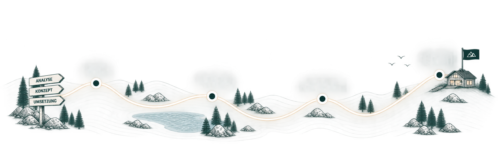

Prozesse verstehen, Digitalisierung gestalten.
FjellQ berät und begleitet Organisationen und Firmen bei der Digitalisierung und Optimierung ihrer Prozesse – von der Analyse bis zur Umsetzung. Im Zentrum steht ein nachhaltiger Ansatz, der Komplexität reduziert und langfristig tragfähige Lösungen schafft.

Prozesse
verstehen
Digitalisierung
gestalten
Nachhaltige
Lösungen schaffen
FjellQ

Klicke auf einen Punkt auf der Karte, um mehr zu erfahren.